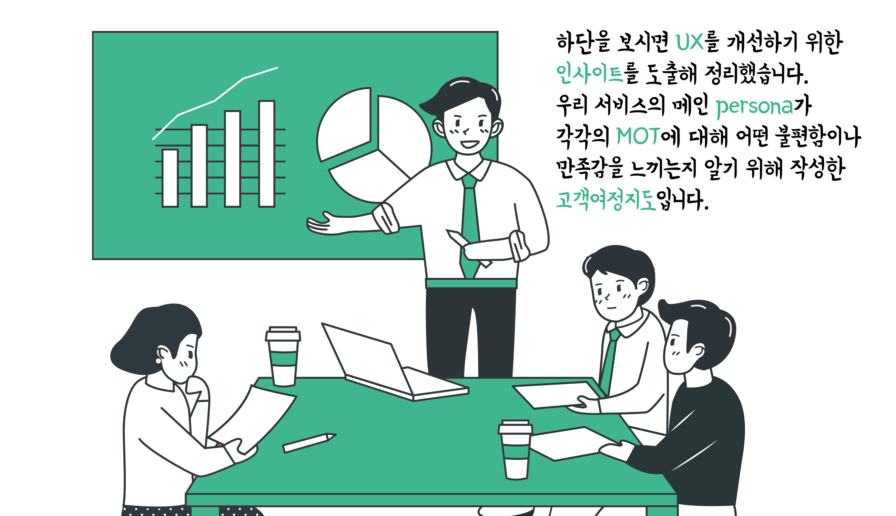

LECTURE/CLASS
대외적인 활동으로 UI 기획에 대한 강의나 워크샵을 하기도 합니다.
가장 좋아하는 것은 Year-End / Year-Start 워크샵인데 한 해를 마무리하거나 시작하면서 삶의 가치를 정하고 계획을 수립해 보는 것입니다.
궁금하시거나, 필요하시면 언제든 연락주세요! 단 한 분이라도 달려가고 싶어요!
WORKSHOP
Year-End/Year Start 워크샵
매년말이나 년초에 진행하는 계획세우기 워크샵 입니다. 자기 삶의 가치 우선순위를 재정리하고 한 해의 목표 수립, 상세 계획을 세우는 활동입니다.
삶의 방향을 잃어버리지 않기 위해서, 13년째 진행하고 있습니다.

LECTURE
처음부터 다시 배우는 서비스 기획 CAMP: UI기획 파트
패스트 캠퍼스에서 주관하는 서비스 기획 CAMP의 UI기획 파트를 담당하고 있습니다.
서비스 기획 업무를 시작하셨거나, 이관 받으신 분들을 위해 3주간의 짧은 코스로 진행하고 있네요.

CLASS
UI기획 클래스
요구사항 정의와 분석부터 정보구조 수립, UI 디자인과 시나리오 작성까지 진행해 보는 워크샵 입니다.
약 4시간 동안 진행하며, 실무를 잠시 맛보기에 좋은 클래스 입니다. 대학생 또는 대학원생 분들께 추천합니다.
(본 수업은 GUI 및 인터랙션 디자인을 포함하지는 않습니다.)